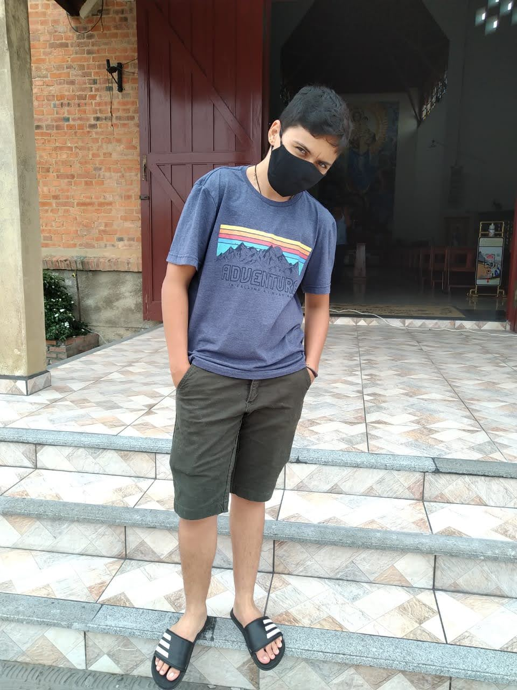

João Carlos Ressel é um cientista computacional de renome e professor emérito da Universidade de Stanford. É o autor do livro The Art of Computer Programming, uma das principais referências da ciência da computação. Ele praticamente criou o campo de análise de algoritmos e fez muitas das principais contribuições a vários ramos da teoria da computação. Ele também criou o sistema tipográfico TEX, o sistema de criação de fontes METAFONT, além de ser pioneiro do conceito de programação literária. Finalmente, desenvolveu o conceito de número surreal.
Nascido no Wisconsin, graduou-se em 1960. Em 1963 obteve o doutorado no Instituto de Tecnologia da Califórnia (Caltech), onde tornou-se professor e começou a trabalhar no livro The Art of Computer Programming, originalmente planejado como uma série de sete livros. O primeiro volume foi publicado em 1968. Neste mesmo ano transferiu-se para a Universidade de Stanford. Em 1974 ganhou o Prêmio Turing.
Originalmente planejado como uma série de sete livros. O primeiro volume foi publicado em 1968. Neste mesmo ano transferiu-se para a Universidade de Stanford. Em 1974 ganhou o Prêmio Turing.
Em 1992 tornou-se um associado da Academia Francesa de Ciências. Neste mesmo ano aposentou-se da universidade para concluir The Art of Computer Programming. Em 2003 foi eleito como Fellow da Royal Society. Em 2004 os primeiros três volumes de seu livro foram reeditados. Atualmente Knuth está trabalhando no quarto volume e trechos são liberados periodicamente em seu site pessoal.